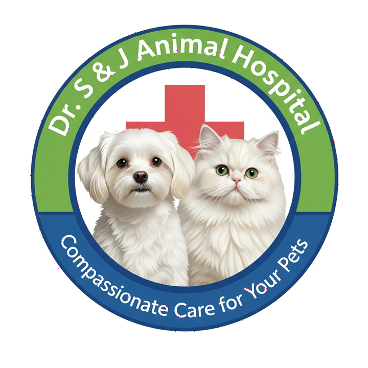

Veterinary Exclusive Gut Health Premier Solution
S&J Veterinary Hospital
★ Dr. James Hong approved
특수 가공 공정을 통해 유해 물질 접촉 면적을 극대화하여 장내 독소를 스펀지처럼 흡착
수의과대학 이후장 교수 추천 항바이러스 특허 균주 배합으로 무너진 장내 유익균 총 신속 재건
고유한 음이온 전하 결합력이 파보·로타 바이러스 및 곰팡이 유해 독소를 자석처럼 잡아 변으로 배출합니다.
손상된 위장관 표면에 분자 코팅막을 형성하여 위산 자극 및 2차 감염으로부터 장벽 세포를 완전히 보호합니다.
기호성이 우수하여 강제 급여 스트레스 없이 원활히 섭취하며, 임상적으로 묽은 변 배출 속도를 단시간 내 차단합니다.
일반 단순 정장제와 다르게, 위내 산도(pH)를 과학적으로 중화 완충(Buffering)하여 장염으로 인한 배앓이 통증을 대폭 경감합니다.
탈수로 무너진 전해질 불균형을 즉각 채워 병원에서 실시하는 정맥 수액 치료(IV Fluid Therapy)의 속도와 회복 시너지를 보장합니다.
독소 및 세균 제거 후, 배합된 균주 처방으로 유익균 총의 증식을 부스팅하여 장 면역 체계를 한층 더 견고하게 회복시킵니다.
※ 본 임상 지표는 에스앤제이 협동 병원 연합의 검증된 연구 기록을 기반으로 합니다.
일반 온라인 시장 저가 경쟁으로 인한 임상 처방 신뢰도 및 마진 붕괴를 원천 방어합니다. **오직 오프라인 동물병원 처방 채널로만 단독 공급**을 통제하며, 권장 처방가는 20,000~25,000원 선으로 병원의 자율 가격 결정권을 적극 보장합니다.
판매원 : 에스앤제이 동물병원
대표자 : 홍순일 (닥터 제임스홍) | 주소 : 경기도 용인시 처인구 포곡읍 선장1로 98-8
사업자등록번호 : 792-66-00615 | 대표 연락처 : 031-321-6562
MONSMECTA EXCLUSIVE PARTNERSHIP
초도 물량 공급 신청 및 브로슈어 문의